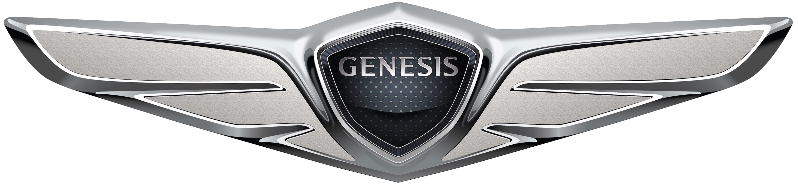

Porsche
Montadora Alemã de luxo esportivo com foco no motorista, prestígio, design agressivo e funcional que busca perfomance ápice na pista e na rua.
Pontos fortes:
- Esportividade altíssima
- Muito luxo percebido
- usabilidade diária
- Exclusividade alta
Saiba Mais
𝓟𝓸𝓻𝓼𝓬𝓱𝓮
Genesis
Montadora Sul-coreana sub-sidiária de luxo da Hyundai Motors, voltada para conforto, tecnologia e confiabilidade com altíssimo valor por dinheiro gasto
Pontos Fortes:
- 10 anos de garantia
- Materiais de alta qualidade
- desempenho ótimo
- Luxo discreto